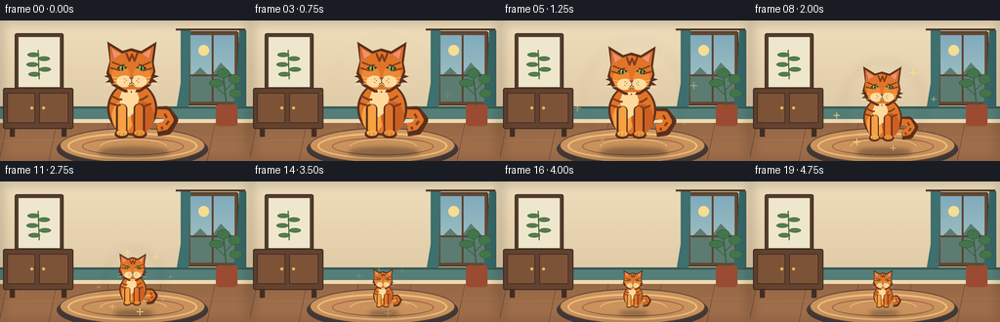
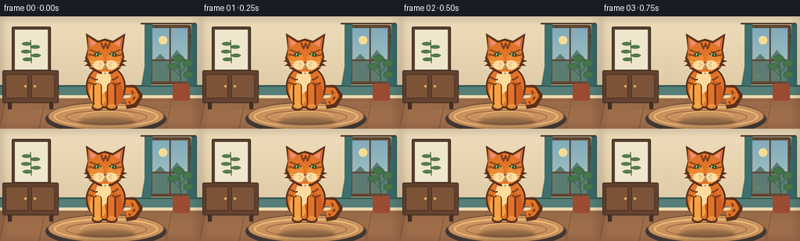

CODING AGENTS AS PIXEL WORLD MODELS
traex/GPT-5.6-Sol · instance_preservation_0049
点击播放 · 原生 RGB 像素
逐轮保存的候选
回放视频、检查图与代码变化。
每份候选均可单独播放。实际图片检查记录在下方工具轨迹中。
候选 01播放与检查图
点击播放 · 原生 RGB 像素


展开代码变化
--- 上一保存版本
+++ 本次保存版本
@@ -0,0 +1,302 @@
+from pathlib import Path
+import math
+
+import numpy as np
+from PIL import Image, ImageDraw, ImageFilter
+
+import artifact_io
+
+
+W, H, N = 256, 144, 20
+AA = 4
+
+
+def sc(v):
+ return int(round(v * AA))
+
+
+def pts(values):
+ return [(sc(x), sc(y)) for x, y in values]
+
+
+def draw_background():
+ """A fixed, softly lit sitting room, rendered oversized for antialiasing."""
+ im = Image.new("RGB", (W * AA, H * AA), (226, 207, 174))
+ d = ImageDraw.Draw(im)
+
+ # Warm plaster wall with a gentle top-to-bottom light gradient.
+ for y in range(sc(102)):
+ t = y / sc(102)
+ color = (238 - int(16 * t), 220 - int(20 * t), 186 - int(22 * t))
+ d.line((0, y, W * AA, y), fill=color)
+
+ # Fine wall texture, deterministic and quiet.
+ rng = np.random.default_rng(41)
+ for _ in range(360):
+ x = int(rng.integers(0, W * AA))
+ y = int(rng.integers(0, sc(101)))
+ shade = int(rng.integers(0, 2))
+ d.point((x, y), fill=(221 + shade * 8, 203 + shade * 7, 172 + shade * 5))
+
+ # Framed botanical print, left.
+ d.rounded_rectangle((sc(15), sc(13), sc(65), sc(72)), radius=sc(2),
+ fill=(83, 61, 44), outline=(62, 45, 34), width=sc(1))
+ d.rectangle((sc(19), sc(17), sc(61), sc(68)), fill=(239, 231, 205))
+ d.line((sc(40), sc(60), sc(39), sc(30)), fill=(78, 112, 70), width=sc(1.3))
+ for cx, cy, ang in [(34, 35, -1), (45, 39, 1), (33, 45, -1), (46, 50, 1), (35, 55, -1)]:
+ d.ellipse((sc(cx - 6), sc(cy - 2.2), sc(cx + 6), sc(cy + 2.2)),
+ fill=(84, 126, 77), outline=(61, 94, 59), width=sc(.6))
+
+ # Tall window and evening sky at right.
+ d.rounded_rectangle((sc(191), sc(11), sc(244), sc(87)), radius=sc(2),
+ fill=(98, 72, 51), outline=(66, 48, 36), width=sc(1))
+ d.rectangle((sc(195), sc(15), sc(240), sc(83)), fill=(135, 177, 190))
+ for yy in range(sc(15), sc(83)):
+ t = (yy / AA - 15) / 68
+ d.line((sc(195), yy, sc(240), yy),
+ fill=(129 + int(41*t), 171 + int(28*t), 188 + int(8*t)))
+ # Distant hills and foliage.
+ d.polygon(pts([(195, 58), (205, 48), (215, 58), (226, 43), (240, 58), (240, 83), (195, 83)]),
+ fill=(92, 124, 114))
+ d.ellipse((sc(203), sc(25), sc(214), sc(36)), fill=(245, 221, 146))
+ d.line((sc(217.5), sc(15), sc(217.5), sc(83)), fill=(92, 68, 50), width=sc(2))
+ d.line((sc(195), sc(56), sc(240), sc(56)), fill=(92, 68, 50), width=sc(2))
+ # Curtains.
+ d.polygon(pts([(185, 8), (195, 9), (193, 90), (180, 94), (185, 64)]), fill=(61, 112, 110))
+ d.polygon(pts([(245, 8), (252, 10), (252, 94), (239, 88), (243, 54)]), fill=(54, 102, 102))
+ d.line((sc(180), sc(9), sc(251), sc(9)), fill=(78, 57, 42), width=sc(2))
+
+ # Wainscot and floor establish unchanging scale.
+ d.rectangle((0, sc(88), W * AA, sc(103)), fill=(84, 126, 119))
+ d.line((0, sc(89), W * AA, sc(89)), fill=(52, 88, 83), width=sc(2))
+ d.rectangle((0, sc(101), W * AA, sc(105)), fill=(238, 218, 178))
+ for y in range(sc(105), H * AA):
+ t = (y / AA - 105) / 39
+ d.line((0, y, W * AA, y), fill=(151 + int(13*t), 105 + int(8*t), 70 + int(8*t)))
+ for x in [7, 58, 111, 165, 220]:
+ d.line((sc(x), sc(105), sc(x - 8), sc(144)), fill=(120, 79, 53), width=sc(.7))
+ d.line((0, sc(123), W * AA, sc(119)), fill=(178, 130, 86), width=sc(.5))
+
+ # Low cabinet on the left, behind the subject.
+ d.rounded_rectangle((sc(3), sc(69), sc(75), sc(111)), radius=sc(2),
+ fill=(99, 66, 47), outline=(64, 45, 34), width=sc(1))
+ d.rectangle((sc(7), sc(74), sc(36), sc(105)), fill=(125, 83, 56), outline=(73, 49, 36), width=sc(1))
+ d.rectangle((sc(40), sc(74), sc(70), sc(105)), fill=(125, 83, 56), outline=(73, 49, 36), width=sc(1))
+ d.ellipse((sc(31), sc(88), sc(34), sc(91)), fill=(226, 184, 95))
+ d.ellipse((sc(43), sc(88), sc(46), sc(91)), fill=(226, 184, 95))
+ d.rectangle((sc(10), sc(110), sc(15), sc(119)), fill=(65, 45, 35))
+ d.rectangle((sc(63), sc(110), sc(68), sc(119)), fill=(65, 45, 35))
+
+ # Plant silhouette beside window.
+ d.rounded_rectangle((sc(221), sc(86), sc(243), sc(108)), radius=sc(3), fill=(156, 75, 51))
+ d.line((sc(232), sc(87), sc(229), sc(59)), fill=(57, 98, 65), width=sc(1.5))
+ d.line((sc(230), sc(76), sc(220), sc(67)), fill=(57, 98, 65), width=sc(1))
+ d.line((sc(230), sc(72), sc(240), sc(62)), fill=(57, 98, 65), width=sc(1))
+ for box in [(214, 60, 229, 68), (234, 55, 247, 65), (222, 49, 235, 59), (235, 70, 248, 79)]:
+ d.ellipse(tuple(sc(v) for v in box), fill=(67, 116, 74), outline=(49, 88, 58), width=sc(.6))
+
+ # Oval woven rug anchors the cat. Its fixed rings make the size change unmistakable.
+ d.ellipse((sc(58), sc(112), sc(213), sc(151)), fill=(67, 58, 55))
+ d.ellipse((sc(61), sc(110), sc(210), sc(146)), fill=(202, 147, 93), outline=(91, 66, 55), width=sc(1))
+ d.ellipse((sc(69), sc(115), sc(202), sc(142)), outline=(239, 190, 124), width=sc(2))
+ d.ellipse((sc(84), sc(120), sc(188), sc(138)), outline=(151, 88, 65), width=sc(1))
+ d.arc((sc(102), sc(121), sc(171), sc(138)), 183, 355, fill=(239, 191, 123), width=sc(1))
+
+ # Soft foreground vignette.
+ vignette = Image.new("RGBA", im.size, (0, 0, 0, 0))
+ vd = ImageDraw.Draw(vignette)
+ vd.rectangle((0, 0, W*AA, H*AA), outline=(50, 33, 25, 55), width=sc(3))
+ vignette = vignette.filter(ImageFilter.GaussianBlur(sc(5)))
+ im = Image.alpha_composite(im.convert("RGBA"), vignette).convert("RGB")
+ return im
+
+
+def draw_cat_master():
+ """A single detailed orange-tabby asset reused at every size."""
+ S = 4
+ cw, ch = 420 * S, 520 * S
+ im = Image.new("RGBA", (cw, ch), (0, 0, 0, 0))
+ d = ImageDraw.Draw(im)
+ q = lambda v: int(round(v*S))
+ qp = lambda vv: [(q(x), q(y)) for x, y in vv]
+ outline = (91, 48, 27, 255)
+ dark = (126, 61, 29, 255)
+ orange = (224, 116, 40, 255)
+ light = (248, 161, 67, 255)
+ cream = (255, 218, 155, 255)
+
+ # Tail behind the body: broad, curled, and striped.
+ d.line(qp([(274, 345), (354, 339), (383, 375), (358, 417), (315, 423)]),
+ fill=outline, width=q(52), joint="curve")
+ d.line(qp([(274, 345), (353, 348), (369, 376), (349, 402), (315, 409)]),
+ fill=orange, width=q(39), joint="curve")
+ for p1, p2 in [((347, 347), (358, 366)), ((367, 380), (354, 397)), ((335, 405), (337, 418))]:
+ d.line(qp([p1, p2]), fill=dark, width=q(10))
+
+ # Seated torso and haunches.
+ d.ellipse((q(91), q(204), q(315), q(445)), fill=outline)
+ d.ellipse((q(101), q(211), q(305), q(435)), fill=orange)
+ d.ellipse((q(112), q(292), q(211), q(429)), fill=light)
+ d.ellipse((q(198), q(294), q(301), q(431)), fill=(205, 94, 34, 255))
+ # Pale bib makes the same individual immediately recognizable.
+ d.polygon(qp([(168, 214), (211, 211), (234, 279), (214, 343), (185, 363),
+ (157, 338), (145, 280)]), fill=cream)
+ d.ellipse((q(156), q(230), q(226), q(323)), fill=cream)
+
+ # Front legs and paws.
+ d.rounded_rectangle((q(130), q(304), q(181), q(447)), radius=q(22), fill=outline)
+ d.rounded_rectangle((q(139), q(306), q(175), q(435)), radius=q(17), fill=light)
+ d.rounded_rectangle((q(209), q(303), q(260), q(447)), radius=q(22), fill=outline)
+ d.rounded_rectangle((q(216), q(306), q(251), q(435)), radius=q(17), fill=orange)
+ d.ellipse((q(124), q(419), q(187), q(458)), fill=outline)
+ d.ellipse((q(133), q(419), q(181), q(447)), fill=(248, 172, 77, 255))
+ d.ellipse((q(202), q(419), q(269), q(458)), fill=outline)
+ d.ellipse((q(211), q(419), q(260), q(447)), fill=(239, 144, 55, 255))
+ for x in [148, 165, 226, 244]:
+ d.line((q(x), q(433), q(x-2), q(444)), fill=(151, 80, 43, 255), width=q(2))
+
+ # Body tabby markings.
+ for line in [qp([(108, 267), (143, 284), (158, 283)]),
+ qp([(104, 300), (137, 311), (151, 307)]),
+ qp([(273, 267), (246, 285), (235, 284)]),
+ qp([(288, 302), (258, 314), (245, 309)])]:
+ d.line(line, fill=dark, width=q(9), joint="curve")
+
+ # Head outline and pointed ears.
+ d.polygon(qp([(102, 111), (91, 24), (160, 66), (199, 54), (243, 67),
+ (312, 25), (299, 119), (307, 159), (285, 221), (238, 251),
+ (168, 252), (111, 220), (87, 166)]), fill=outline)
+ d.polygon(qp([(106, 106), (102, 43), (158, 78), (195, 66), (243, 79),
+ (300, 44), (290, 112), (297, 157), (276, 211), (235, 239),
+ (171, 240), (119, 211), (99, 161)]), fill=orange)
+ # Ear interiors.
+ d.polygon(qp([(109, 55), (119, 102), (152, 80)]), fill=(240, 143, 113, 255))
+ d.polygon(qp([(291, 56), (281, 102), (250, 81)]), fill=(240, 143, 113, 255))
+ d.line(qp([(108, 55), (119, 102)]), fill=(184, 84, 62, 255), width=q(3))
+ d.line(qp([(291, 56), (281, 102)]), fill=(184, 84, 62, 255), width=q(3))
+
+ # Warm cheek shading and cream muzzle.
+ d.ellipse((q(112), q(132), q(192), q(218)), fill=(237, 137, 51, 255))
+ d.ellipse((q(207), q(132), q(286), q(218)), fill=(237, 137, 51, 255))
+ d.ellipse((q(132), q(176), q(204), q(229)), fill=cream)
+ d.ellipse((q(195), q(176), q(269), q(229)), fill=cream)
+
+ # Forehead M and side stripes.
+ d.line(qp([(176, 75), (190, 111), (202, 82), (213, 111), (227, 75)]),
+ fill=dark, width=q(9), joint="curve")
+ for line in [qp([(112, 116), (153, 132), (169, 127)]),
+ qp([(105, 142), (146, 153), (163, 146)]),
+ qp([(286, 116), (248, 132), (232, 127)]),
+ qp([(293, 143), (254, 154), (236, 147)])]:
+ d.line(line, fill=dark, width=q(7), joint="curve")
+
+ # Eyes: green irises with highlights.
+ d.polygon(qp([(132, 142), (155, 130), (181, 140), (158, 156)]), fill=(49, 45, 29, 255))
+ d.polygon(qp([(219, 140), (246, 130), (269, 143), (243, 156)]), fill=(49, 45, 29, 255))
+ d.ellipse((q(145), q(134), q(170), q(154)), fill=(127, 172, 92, 255))
+ d.ellipse((q(230), q(134), q(255), q(154)), fill=(127, 172, 92, 255))
+ d.ellipse((q(155), q(134), q(162), q(155)), fill=(30, 28, 22, 255))
+ d.ellipse((q(240), q(134), q(247), q(155)), fill=(30, 28, 22, 255))
+ d.ellipse((q(151), q(136), q(156), q(141)), fill=(255, 255, 236, 255))
+ d.ellipse((q(236), q(136), q(241), q(141)), fill=(255, 255, 236, 255))
+
+ # Nose, mouth, chin.
+ d.polygon(qp([(188, 185), (210, 184), (200, 197)]), fill=(145, 71, 69, 255))
+ d.line(qp([(200, 196), (200, 207), (189, 216)]), fill=outline, width=q(3))
+ d.line(qp([(200, 207), (211, 216)]), fill=outline, width=q(3))
+ d.arc((q(178), q(194), q(201), q(223)), 30, 120, fill=outline, width=q(2))
+ d.arc((q(199), q(194), q(222), q(223)), 60, 150, fill=outline, width=q(2))
+
+ # Whiskers and dots.
+ for y, dy in [(190, -10), (200, 0), (209, 10)]:
+ d.line(qp([(163, y), (79, y+dy)]), fill=(255, 239, 198, 235), width=q(2))
+ d.line(qp([(237, y), (321, y+dy)]), fill=(255, 239, 198, 235), width=q(2))
+ for x, y in [(169,191),(177,198),(169,207),(231,191),(223,199),(231,207)]:
+ d.ellipse((q(x-2), q(y-2), q(x+2), q(y+2)), fill=(129, 71, 40, 255))
+
+ # Small fur tufts along cheeks/chest add an organic silhouette.
+ d.polygon(qp([(105, 170), (77, 180), (107, 190), (82, 207), (122, 207)]), fill=outline)
+ d.polygon(qp([(294, 170), (323, 180), (294, 190), (317, 207), (278, 207)]), fill=outline)
+ d.polygon(qp([(179, 239), (188, 262), (199, 244), (210, 263), (222, 239)]), fill=cream)
+ return im
+
+
+def smootherstep(t):
+ t = max(0.0, min(1.0, t))
+ return t*t*t*(t*(t*6 - 15) + 10)
+
+
+def make_frame(index, background, cat_master):
+ frame = background.convert("RGBA")
+
+ # First and final moments hold long enough to clearly read both states.
+ progress = smootherstep((index - 2) / 14.0)
+ cat_scale = 1.0 - 0.61 * progress
+ cat_h = int(round(119 * AA * cat_scale))
+ cat_w = int(round(cat_h * cat_master.width / cat_master.height))
+ cat = cat_master.resize((cat_w, cat_h), Image.Resampling.LANCZOS)
+
+ # Ground contact never moves: this is one cat physically shrinking, not a zoom.
+ ground_y = sc(135)
+ x = sc(137) - cat_w // 2
+ y = ground_y - cat_h
+
+ # Contact shadow shrinks with the cat while the room remains fixed.
+ shadow = Image.new("RGBA", frame.size, (0, 0, 0, 0))
+ sd = ImageDraw.Draw(shadow)
+ halfw = sc(34 * cat_scale + 2)
+ sh = sc(4.5 * cat_scale + 1)
+ sd.ellipse((sc(137)-halfw, ground_y-sh, sc(137)+halfw, ground_y+sh), fill=(42, 31, 28, 95))
+ shadow = shadow.filter(ImageFilter.GaussianBlur(sc(2.2)))
+ frame = Image.alpha_composite(frame, shadow)
+
+ # A restrained amber transformation aura appears only during the change.
+ magic = math.sin(math.pi * min(1, max(0, (index-2)/14))) ** 1.4
+ if magic > 0.02:
+ aura = Image.new("RGBA", frame.size, (0, 0, 0, 0))
+ ad = ImageDraw.Draw(aura)
+ cx = sc(137)
+ cy = y + cat_h // 2
+ rx = cat_w * 0.52 + sc(3)
+ ry = cat_h * 0.50 + sc(2)
+ ad.ellipse((int(cx-rx), int(cy-ry), int(cx+rx), int(cy+ry)),
+ outline=(255, 193, 75, int(74*magic)), width=sc(1))
+ glow = aura.filter(ImageFilter.GaussianBlur(sc(4)))
+ frame = Image.alpha_composite(frame, glow)
+
+ frame.alpha_composite(cat, (x, y))
+
+ # Hand-placed glints orbit the same subject and reinforce gradual change.
+ if magic > 0.04:
+ glints = Image.new("RGBA", frame.size, (0, 0, 0, 0))
+ gd = ImageDraw.Draw(glints)
+ for j in range(8):
+ a = j * 2*math.pi/8 + index*0.27
+ rr_x = (cat_w/AA*0.58 + 8 + 2*math.sin(index*.5+j))
+ rr_y = (cat_h/AA*0.42 + 4)
+ gx = 137 + rr_x*math.cos(a)
+ gy = (y+cat_h/2)/AA + rr_y*math.sin(a)
+ pulse = 0.5 + 0.5*math.sin(index*0.9 + j*1.7)
+ r = (0.7 + 1.15*pulse) * AA
+ alpha = int((100 + 130*pulse)*magic)
+ gd.line((int(gx*AA-r*2), int(gy*AA), int(gx*AA+r*2), int(gy*AA)),
+ fill=(255, 225, 133, alpha), width=max(1, int(r*.65)))
+ gd.line((int(gx*AA), int(gy*AA-r*2), int(gx*AA), int(gy*AA+r*2)),
+ fill=(255, 225, 133, alpha), width=max(1, int(r*.65)))
+ frame = Image.alpha_composite(frame, glints)
+
+ # Warm cinematic wash and final antialiasing.
+ out = frame.convert("RGB").resize((W, H), Image.Resampling.LANCZOS)
+ return np.asarray(out, dtype=np.uint8)
+
+
+def main():
+ case_dir = Path(__file__).resolve().parent
+ background = draw_background()
+ cat_master = draw_cat_master()
+ frames = np.stack([make_frame(i, background, cat_master) for i in range(N)])
+ artifact_io.save(frames, case_dir)
+
+
+if __name__ == "__main__":
+ main()
可观测工具轨迹
实际执行的命令与返回图片。
命令 1exit 0
/bin/bash -lc "cat prompt.txt && printf '\\n---RULES---\\n' && cat GENERATION_RULES.md && printf '\\n---SPEC---\\n' && cat task_spec.json"
命令 2exit 1
/bin/bash -lc "find . -maxdepth 2 -type f -printf '%p\\n' | sort && printf '\\n--- tools ---\\n' && command -v ffmpeg && command -v python3 && python3 - <<'PY' mods=['PIL','cv2','numpy','imageio','moviepy','torch'] for m in mods: try: x=__import__(m); print(m, 'OK', getattr(x,'__version__','')) except Exception as e: print(m, 'NO', e) PY"
命令 3exit 0
/bin/bash -lc 'cat artifact_io.py'
命令 4exit 0
/bin/bash -lc 'set +e; for x in ffmpeg python3 convert magick; do printf "$x: "; command -v $x || true; done; python3 - <<'"'PY' mods=['PIL','cv2','numpy','imageio','moviepy'] for m in mods: try: x=__import__(m); print(m, 'OK', getattr(x,'__version__','')) except Exception as e: print(m, 'NO', e) PY"
命令 5exit 0
/bin/bash -lc "python3 generate.py && ls -lh pixels.npz inspection.png transition_check.png index.html frames/00.png frames/19.png && python3 - <<'PY'
import numpy as np
from PIL import Image
f=np.stack([np.array(Image.open(f'frames/{i:02d}.png')) for i in range(20)])
print('shape/dtype/range',f.shape,f.dtype,f.min(),f.max())
print('mean consecutive differences', [round(float(np.abs(f[i].astype(float)-f[i-1]).mean()),2) for i in range(1,20)])
PY"视觉工具实际返回图片 1

保存候选 1 份；完成命令 5 次；可验证图片返回 1 张。原始 API 响应与完整日志保留在本地。